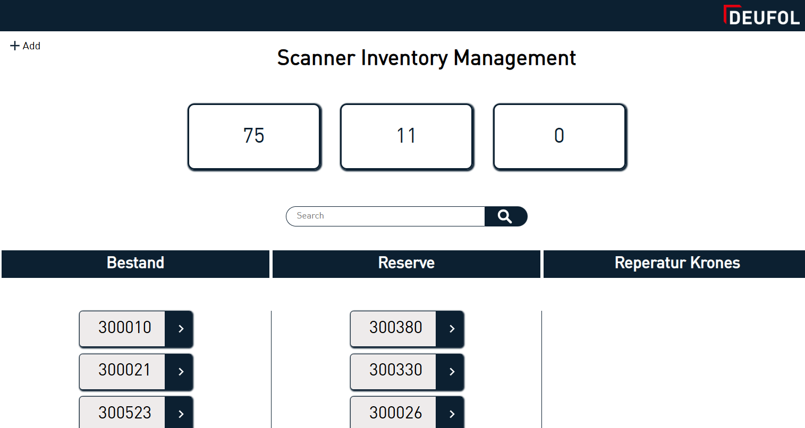

Scanner Inventory Management
Um die Excel-Liste zur "Übersicht" über die Scanner und deren
Standorte abzulösen, habe ich ein simples Scanner Inventory Management
System entwickelt.
Ziel war es, das umständliche Kopieren von einem Arbeitsblatt ins
andere durch schnelles Drag-and-Drop zu ersetzen.
Zusätzlich wird ein besserer Überblick gewährleistet.